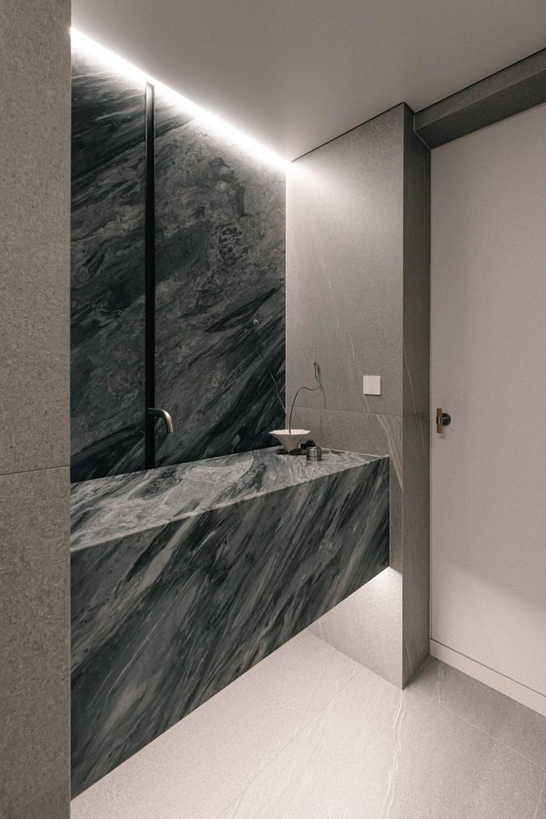
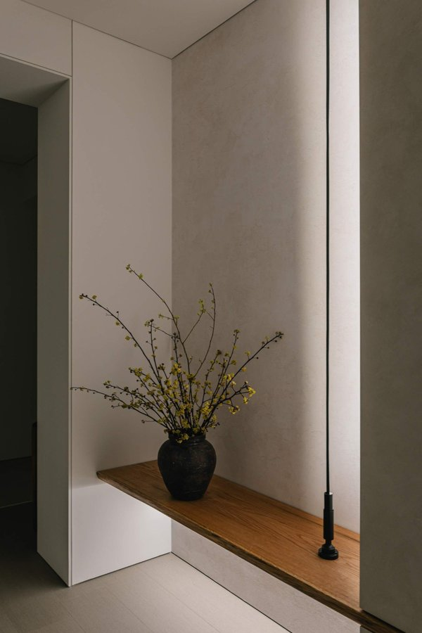
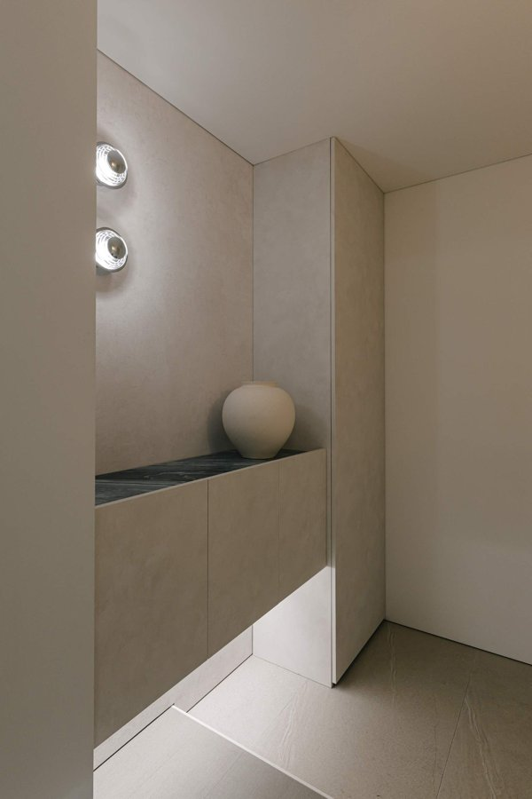

대상 기업 리후디자인(대표 백효인). 이 페이지는 1 · 안(지금 가정하고 있는 고객·시장·가치제안·사업모델)을 그림으로 보여주고, 2 · 인터뷰·관찰로 사람들이 실제로 겪은 불편과 행동을 확인한 뒤, 3 · 결과 입력의 숫자로 4 · 판정에서 두 캔버스가 어떻게 바뀌는지 보여줍니다. 의견("있으면 좋겠다")은 묻지 않고, 과거·현재 경험만 묻습니다. 말로 안 나오면 관찰합니다.
왜 이 과제를 하는가
전에 살던 집. 광교의 30층 탑층 복층 아파트였고, 대기업 브랜드 리모델링으로 겉보기엔 예쁘게 해 둔 집이었다. 살아 보니 달랐다. 샤시를 손대지 않아 겨울에 찬바람이 들어왔고, 복층이라 난방비가 많이 나왔다. 사진으로는 좋아 보였지만 생활에서 실제로 불편한 것은 사진에 안 찍히는 곳에 있었다.
이번 집. 수원으로 이사하면서 "돈을 더 들이더라도 제대로 하자"고 마음먹고 알아보다가, 유튜브로 알려진 '인테리어쇼' 카페의 아카데미가 졸업작품 현장을 모집하는 것을 봤다. 지원했고, 거기서 리후디자인의 백효인 대표를 만났다. 그는 내 집을 자기 작품으로 여겨 시간과 비용을 많이 들여 시공했고, 나는 그 과정에서 공정과 자재를 같이 공부했다. 그렇게 친해졌다.
보게 된 것. 설비·방수 같은 기초공정부터 디테일 마감까지 손은 아주 좋은데, 회사로서는 다른 그림이었다. 고객 응대, 견적과 기록, 홍보, 시장에서 회사가 서는 방식 같은 프로세스가 시공 실력을 못 따라온다. 그래서 종종 도움을 청했고, 몇 번 도와주기도 했다.
그래서 이 과제. 직장 특성상 회사 업무는 과제로 쓸 수 없다. 대신 실제로 존재하는 회사, 실제 시공력, 실제로 만날 수 있는 고객과 업계 사람이 있는 이 사례를 가지고, "이 사람이 인테리어 시장에서 앞으로 어떻게 살아남을 것인가"를 수업의 틀(세그먼트 → 가치제안 캔버스 → 비즈니스모델 캔버스 → 고객검증 → 피벗)로 같이 고민해 보기로 했다. 사업 주체는 리후디자인이고, 나는 BM 설계와 고객검증을 수행하는 역할이다. 인터뷰는 대표가 직접 한다.
이 경험이 가설이 된 지점 — "예쁘게"가 아니라 되돌릴 수 없는 공정(샤시·설비·방수·단열)을 제대로 하는 것이 사는 사람에게 더 큰 가치라는 것, 그리고 그걸 잘하는 사람이 있어도 고객이 그를 찾아내고 믿을 방법이 없다는 것. 이 둘이 이 과제의 출발 가설이다.



수원 집 시공 결과(리후디자인, 인테리어쇼 아카데미 졸업작품 현장). 사진은 결과이고, 가설은 사진에 안 찍히는 공정에서 나왔다.
시장은 고객의 합→누구에게 (세그먼트)→그 사람의 일·불편·요구 (VPC 오른쪽)→우리가 주는 것 (VPC 왼쪽)→그걸 돌리는 구조 (BMC)→인터뷰·관찰로 확인
전체 리모델링으로 고정. 부분 공사는 수익도 작고 제대로 할 수 없으며, 부분 전문 업체에 밀린다. 인쇼 교육의 디테일 표준도 전체 공간을 전제로 함
방식
셀프 · 반셀프 · 맡기되 알아보고 맡김 · 통째로 위임 · 디자인 의뢰
알아보고 맡기는 사람. 디자인 제안을 원하는 사람은 제외
공정·자재 특화
욕실·방수 · 타일 · 우드 · 무몰딩·무문선 디테일 · 세라믹 대판 · 주방
전체 공사 안에서 되돌릴 수 없는 공정(설비·방수·전기)과 무몰딩 디테일 구현을 강점으로. 부분 상품이 아니라 전체 공사의 신뢰 근거
상황
입주 전 · 거주 중 · 매도 전 단장
입주 전과 거주 중 둘 다
고객 특성
맞벌이·바쁜 부부 · 과거 공사에서 데인 사람 · 반도체 성과급으로 목돈이 생긴 사람
경기 남부 반도체 종사자 부부를 1순위 가정. 특화인지 축소인지는 인터뷰로 판정(X4)
누구에게 — 고객 세그먼트 가안 v0
1순위 경기 남부(동탄·영통·수지) 10년 이상 구축 아파트에 살거나 들어갈 반도체 종사자 부부로, 성과급 등 목돈이 생겼고, 과거 공사나 주변 사례에서 하자·추가비용을 겪어 "제대로" 하려는 사람. 부부가 같이 결정하고 정보는 맘카페·유튜브·지인. 전체 리모델링을 하되 업체·단가·공정을 충분히 알아본 뒤 맡기는 사람. 디테일은 인쇼 등에서 본 사진으로 직접 가져옴. 2순위(B2B) 디자인은 하지만 시공 하자로 고생하는 하이엔드 디자인 스튜디오. 제외 최저가만 찾는 고객, 디자인 제안을 원하는 고객, 초하이엔드. 반도체 특화가 "시장을 줄이는 것"인지 "이길 수 있는 시장을 고르는 것"인지는 하나로 판정: 반도체 종사자의 불편이 일반 고객과 다르면 특화(상품·메시지·채널을 바꿈), 같으면 세그먼트를 "경기 남부 10년+ 구축 거주자"로 넓히고 반도체는 채널로만 둠.
시장 크기 — 전체 · 유효 · 수익 아래에서 위로 쌓음
시장은 고객의 합이므로 위에서 비율로 자르지 않고, 세그먼트 고객 수 × 연간 공사 비율 × 객단가로 쌓습니다. 숫자는 '3 · 결과 입력'의 시장 칸에 넣으면 계산됩니다.
구분
정의
구하는 법 (효인·기헌이 할 일)
전체 시장 TAM
국내 주거 리모델링 시장
한국건설산업연구원 전망: 2025년 약 37조, 2030년 44조. 그대로 인용
유효 시장 SAM
경기 남부 10년 이상 구축 아파트 세대 중 연간 공사하는 세대 × "제대로" 구간 객단가
① 동탄1·2, 영통, 수지, 광교의 2016년 이전 준공 단지 세대수 합(공동주택관리정보시스템 K-apt, 네이버 부동산 단지 정보) ② 연간 공사 비율은 인터뷰 A에서 "최근 5년 내 공사했다" 비율로 추정 ③ 객단가는 단가DB의 전체 리모델링 평균(원가 × (1+가산율))
수익 시장 SOM
리후가 대표 직접 시공으로 실제 소화 가능한 매출
월 현장 수 × 12 × 객단가. 전체 리모델링은 대표 직접으로 월 1~2현장이 현실. SOM / SAM이 1%를 넘지 않으면 "시장이 작아서" 못 하는 건 아니라는 뜻
가치제안 캔버스 가안 v0 — 판정 탭에서 색으로 갱신됨
오른쪽 원이 고객(일 J · 불편 P · 요구 G), 왼쪽 네모가 우리(상품 S · 불편을 줄이는 것 · 요구를 채우는 것). 불편 7개는 고객 여정 순서(업체 선택 → 견적 → 결정 → 공사 중 → 결과 → 사후)에 셀프 경로 하나를 더해 겹치지 않게 나눴습니다.
상품 뒤 괄호 = 그 상품이 줄이는 불편과 채우는 요구. 판정 후: 확인됨 절반 아님(취소선)
비즈니스모델 캔버스 가안 v0 — 판정 탭에서 갱신됨
가치제안(VP)과 고객 세그먼트(CS)는 위 VPC에서 그대로 옴. 나머지 7칸은 그 둘을 돌리기 위한 구조. 표준 프로세스는 "있어야 하는 것"(핵심 활동)이지 차별점이 아니며, 베끼기 어려운 것 세 가지만 핵심 자원에 둡니다.
운영 모델 — 공정 단계별로 누가 하나 빈칸이 곧 과제
효인 대표 혼자 다 할 수 없음을 전제로, 단계마다 담당을 적었습니다. "도구"는 시중 프로그램이나 외주로 리후가 스스로 조달해야 하는 것입니다.
단계
하는 일
담당 (가정)
기록으로 남는 것
1 상담
첫 통화·방문, 어디서 보고 왔는지와 과거 공사 경험 묻기
이기헌
상담 기록(이 페이지 E 문항)
2 실측·견적
실측, 공정별 단가로 견적, 보증·점검 조건 명시
백효인 실측 / 견적 도구(단가DB)
공정별 견적서
3 디테일 확정
고객이 가져온 사진을 표준 디테일로 번역, 확정가
백효인 / 디자인 표준은 인쇼 디테일을 그대로 씀(새로 만들지 않음)
디테일 시트
4 계약·일정
표준계약서, 공정표
이기헌
계약서·공정표
5 기초공정
철거·설비·방수·전기·바닥 (전체 공사의 신뢰 근거)
백효인 직접
공정 사진
6 마감
목공·타일·도장·가구
전속 시공팀(외주) / 디테일은 백효인 확인
공정 사진
7 주간 보고
사진·진행률 전달
이기헌 / 보고 도구
주간 리포트
8 준공·점검
준공 확인, 6/12개월 점검, 후기·소개 요청
백효인 점검 / 이기헌 후기
점검 기록·후기
9 회계·세무
정산, 세금
외주 세무사
장부
10 홍보·포트폴리오
디테일 사진 정리, 맘카페·유튜브
이기헌
포트폴리오
베끼기 문제 — 위 프로세스는 다른 업체도 금방 따라 할 수 있습니다. 그래서 차별점은 프로세스가 아니라 ① 효인 대표의 손(되돌릴 수 없는 공정 + 디테일 구현), ② 현장마다 쌓이는 기록(사진·단가·고객의 말 — 시간이 있어야 생김), ③ 전속 시공팀·스튜디오와의 관계에 둡니다. 프로세스는 이 셋을 고객이 볼 수 있게 하는 그릇입니다. 중간 시장에 프로세스를 갖춘 업체가 얼마나 드문지는 인터뷰 B·C의 관찰(X7)로 확인합니다.
원칙 ① 과거·현재에 실제로 한 일과 겪은 일만 묻는다. "이런 게 있으면 쓰겠나"는 묻지 않는다. ② 숫자로 답하게 한다(몇 번, 얼마, 며칠, 몇 곳). ③ 말로 안 나오는 것은 보여 달라고 하거나 현장에서 관찰한다. ④ 각 문항 아래 작은 글씨가 "이 답을 어떻게 숫자로 볼 것인가"다. 그날 바로 '3 · 결과 입력'에 옮긴다.
세 그룹: A 고객 10명(기존 고객·지인·지인의 지인, 반도체 종사자 5 + 기타 5, 가능하면 부부 같이), B 동료 시공자 5명, C 디자인 스튜디오 대표 3~5곳.
A. 고객 — 10명 (반도체 5 · 기타 5)
최근 2년 내 공사했거나 지금 진행 중. 직장군은 응답지 뒷면에 적고 집계 때만 붙인다.
A-1 배경 (세그먼트·시장 크기용)
사는 단지와 입주 연차는? 최근 5년 안에 집에 공사를 한 적이 있나? 있다면 언제, 어디까지(도배·장판 / 욕실·주방 / 전체)? 세그먼트 · SAM측정 10명 중 "5년 내 공사함" 수 → 연간 공사 비율 추정(SAM). 공사 범위별 인원 수.
성과급이나 목돈이 들어왔을 때 실제로 어디에 썼나? 집에 쓴 게 있다면 무엇에 얼마? 집에 안 썼다면 그 돈은 어디로 갔나? X2 세그먼트측정 목돈 받은 사람 수, 그중 집(공사·가구 포함)에 쓴 사람 수, 금액. 집에 안 쓴 이유를 그대로 적는다(저축·대출·차·여행).
업체는 누가 찾고 최종 결정은 누가 했나? 정보는 어디서 얻었나(맘카페 / 블로그 / 유튜브 / 지인)? 채널 · 결정자측정 배우자 주도 수, 정보원별 수. 유튜브면 어떤 영상이었는지 제목 수준으로.
업체를 찾을 때 뭐라고 검색했나? "인테리어 업체"였나, "욕실 리모델링"처럼 공정 이름이었나? X1 특화측정 공정명으로 찾은 사람 수. 가능하면 검색 기록·카페 글 제목을 보여 달라고 한다(관찰).
A-2 고객 여정대로 겪은 일 (불편 P)
선택 몇 곳을 비교했고 최종 결정에 며칠 걸렸나? 결국 무엇을 보고 골랐나? 더 비싼 곳을 고른 적이 있다면 왜? P1X3측정 비교 업체 수, 결정 소요일. "누가 잘하는지 몰라서 힘들었다"는 말이 나오면 P1 겪음. 더 비싼 곳을 고른 사람 수 → X3(초저가 제외 타당성).
견적 견적서에 공정별 단가가 있었나, 총액만 있었나? 공사 중 추가비용이 생겼나, 얼마였나? P2G1측정 추가비용 발생 수와 금액 → P2. 공정별 단가를 요구하거나 비교한 사람 수 → G1 행동.
결정 상담에서 혼자 정해야 했던 것 중 가장 어려웠던 결정은? 이해 안 돼서 다시 물어본 게 있나? P3측정 구체 사례가 나오면 P3 겪음. 사례 수.
공사 중 진행 상황을 어떻게 알았나? 현장에 몇 번 갔나? 사진·보고를 받았나, 못 받아서 간 건가? P4G3측정 현장 방문 횟수. "몰라서 갔다"면 P4 겪음. 보고를 요구했거나 못 받아 직접 간 사람 수 → G3 행동.
결과 레퍼런스 사진을 몇 장 들고 갔나? 그대로 나왔나? 다르게 나온 부분은 어디였고 어떻게 됐나? P5G4측정 사진 지참 수, 다르게 나온 사람 수 → P5. 사진에 대해 확정가를 받아낸 사람 수 → G4 행동.
사후 하자가 났나? 연락은 됐나, 와서 고쳐줬나, 며칠 걸렸나, 내 돈이 더 들었나? 계약 때 보증·AS 조항을 확인했었나? P6G2측정 하자 발생 수, 미처리·지연 수, 자비 부담 금액 → P6. 보증·AS 조항을 확인·비교한 사람 수 → G2 행동.
셀프 경로 직접 하거나 따로 업자를 부른 공정이 있나? 그중 다시 했거나 돈을 더 쓴 게 있나? 어느 공정, 얼마? P7측정 셀프·반셀프 경험자 수, 그중 재시공·추가 지출 수와 금액 → P7(멍청비용).
대표 공사 기간에 업체 대표를 몇 번 봤나? 안 보여서 생긴 문제가 있었나? G5측정 대표 부재로 문제를 겪은 사람 수, 대표가 있는지 미리 확인한 사람 수 → G5 행동.
끝나고 완성 사진을 어디에 올렸거나 누구에게 보여줬나? 어떤 부분을? G6측정 올리거나 보여준 사람 수, 보여준 부위(주방·욕실·디테일).
A-3 카드 정렬 (카드를 보여주며 — 겪은 일 기준)
불편 카드 7장 중 실제로 겪은 것에 전부 체크하고, 그중 가장 돈·시간을 많이 쓰게 한 3장에 순위. P1~P7 P1 누가 잘하는지 몰라 고르기 어려움P2 견적 불투명·추가비용P3 혼자 정해야 하는 결정 부담P4 공사 중 진행 상황 모름P5 사진·요구와 다르게 나옴P6 하자 나면 연락 안 됨·책임 회피P7 직접 하다 다시 함측정 카드별 겪음 수, Top3 포함 수. 반도체군·기타군 따로 집계 → X4(두 군의 Top3가 겹치는 개수).
우리가 안 물었지만 공사에서 가장 힘들었던 것은? 측정 7장 밖의 불편이 2명 이상에게서 같은 말로 나오면 P8 후보로 적는다.
B. 동료 시공자 — 5명
효인 대표가 아는 설비·타일·목공·전기 사장. 그들이 보는 고객, 그들의 운영 방식, 지금까지 실제로 해본 협업.
지난 1년 고객이 공사 끝나고 항의한 건이 몇 건? 무엇 때문에? 어떻게 끝났나(무상 보수 / 비용 분담 / 분쟁)? P6·P2측정 사람당 항의 건수와 유형. 하자 처리 소요일.
고객이 사진 들고 와서 "이대로"라고 한 현장이 지난 1년 몇 건? 그중 그대로 된 건 몇 건? 안 된 이유는? P5측정 그대로 된 비율(건수/건수).
셀프·반셀프 하다가 망가져서 온 현장이 지난 1년 몇 건? 어느 공정이었나? P7측정 건수와 공정 분포.
불편 카드 7장 중 "고객이 실제로 제일 많이 겪는다"고 보는 3장은? P1~P7측정 카드별 B Top3 수. A의 Top3와 비교 → 업계 상식과 고객 말의 차이.
지난 1년에 다른 업체와 공정을 나눠서 일한 현장이 있나(한쪽이 기초, 한쪽이 마감)? 몇 건, 어떤 조건(단가·결제·책임)이었나? 문제는? X5 파트너측정 분업 경험자 수, 조건을 그대로 적는다. 의향이 아니라 해본 구조만.
경기 남부에서 지금 "기초공정만 맡기는 업체"가 있나? 있다면 누구, 어떻게 일하나? P1경쟁측정 거론된 업체 수와 이름. 없다고 하면 그 이유.
지난 1년에 거절한 현장은 몇 건, 어떤 유형이었나? 제외 세그먼트측정 거절 유형 분포(최저가 요구 / 과도한 변경 / 셀프 뒤처리 등).
관찰 (보여 달라고 한다) ① 최근 견적서 1장 — 공정별 단가가 있나 ② 공정표를 고객에게 주나 ③ 고객 기록(이름·현장·하자 이력)을 어디에 남기나 ④ 하자 접수를 어떻게 받나(전화만 / 양식) ⑤ 디테일 표준(사진·도면)이 있나. 측정 5개 중 갖춘 개수 → X7. 3개 이상이면 "프로세스 보유".
C. 디자인 스튜디오 대표 — 3~5곳
인쇼 아카데미 인맥, 경기 남부·강남. 상품 ③의 고객이자 벤치마킹 대상.
지난 1년 시공 때문에 생긴 하자·분쟁·일정 지연이 몇 건? 그중 가장 비쌌던 건은 얼마가 들었고 누가 부담했나? P6·P4측정 건수, 금액, 부담 주체.
지난 2년 안에 시공 파트너를 바꾼 적이 있나? 왜 바꿨고, 새 파트너는 무엇을 보고 골랐나? X6 상품③측정 바꾼 곳 수, 교체 사유 분포(하자 / 일정 / 소통 / 가격). 고른 기준을 그대로 적는다.
디자인은 그대로인데 시공에서 무너진 디테일이 지난 1년 몇 건? 어느 디테일(무몰딩·단차·줄눈 등)? P5측정 건수와 디테일 종류.
지금 시공 파트너에게 시공비 외에 추가로 낸 돈이 있나(하자 보수·재시공·지연 보상)? 지난 1년 얼마? G2·G5측정 금액. 이 금액이 "책임지는 시공사"에 낼 수 있는 프리미엄의 상한 근거.
지금 파트너와 책임 경계(어디까지 시공사 책임인지)를 문서로 정해두었나? 문제가 됐던 적은? 수정 포인트측정 문서화 여부, 분쟁 사례.
관찰 B와 같은 5개(견적서·공정표·고객 기록·하자 접수·디테일 표준)를 보여 달라고 한다. 스튜디오는 디자인 표준 문서가 있을 가능성이 높으니 그 형식을 눈으로 본다 — 리후가 만들 게 아니라 가져다 쓸 것. 측정 5개 중 갖춘 개수 → X7에 합산.
E. 첫 상담 기록 (앞으로 모든 상담에서)
인터뷰가 끝난 뒤에도 계속 쌓이는 자산. 기헌 대표가 첫 통화·방문 때 5분.
어디서 알고 연락했나? 무엇을 보고(사진·영상·소개·가격)? 측정 유입 경로별 수.
지금 집은 몇 년차, 공사 범위는, 예산은 어떻게 정했나(목돈·대출·저축)? 측정 세그먼트 일치 여부.
이전 공사 경험이 있나? 그때 가장 힘들었던 것은? 측정 P1~P7 중 어디에 해당하는지.
다른 업체 몇 곳과 비교 중인가? 그 업체들은 뭘 내세우나? 측정 비교 업체 수, 경쟁 포인트.
응답 인원을 먼저 넣고, 불편(P)은 "겪은 사람 수"와 "가장 돈·시간을 쓰게 한 3장에 넣은 수", 요구(G)는 "그렇게 행동한 사람 수"를 넣습니다. 기준은 미리 정해둔 것이라 바꾸지 않습니다. 다 넣으면 4 · 판정에서 시트에 저장.
시장 크기
연간 공사 비율 = 5년 내 공사 수 ÷ A 인원 ÷ 5. SAM = 세대수 × 연간 비율 × 객단가. SOM = 월 현장 × 12 × 객단가.
불편 — 실제로 겪었나
요구 — 그렇게 행동했나
세그먼트·특화·파트너·프로세스 신호
판정
가치제안 캔버스 v1 — 검증 반영
확인됨 절반 아님(취소선) · 회색은 미입력
비즈니스모델 캔버스 v1 — 검증 반영
수업 틀 — 고객 프로파일(일·불편·요구)을 가설로 먼저 적고, 인터뷰·관찰로 사실(Fact)로 바꾼 뒤, 가치맵(상품·불편 해소·요구 충족)과 맞는지(Fit) 본다. 맞지 않으면 상품을 바꾸거나(피벗) 세그먼트를 바꾼다. 10명은 통계가 아니라 패턴 탐색이므로 "경향"으로만 말한다.